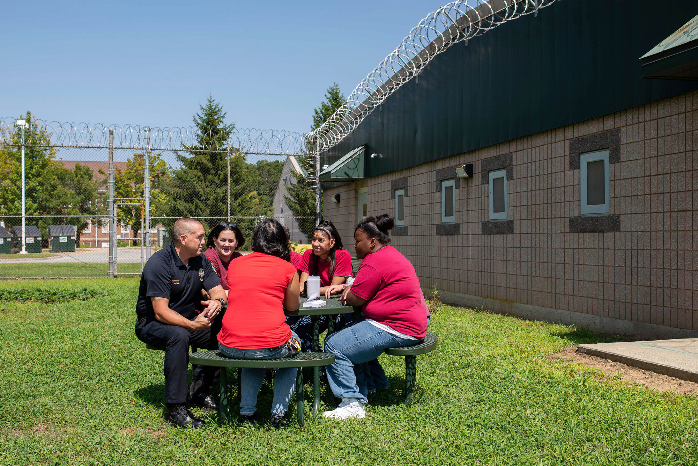
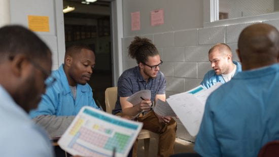

About Us
Our Mission
The Center for Community Transitions is a non-profit organization with a mission to strengthen our community by helping people with criminal records and their families find a healthier and more productive way of living. Our work provides employment and transition services; supports alternatives to incarceration; and restores and strengthens family bonds.
Our History
- Return individuals to familys in our community as law-abiding citizens and reengage them as parents, employees and neighbors.
- Break the cycle of recidivism and of intergenerational criminal justice involvement.
- Advocate for social justice changes in the system that eliminates barriers and obstacles to full restoration of citizen rights.
- Strengthen families affected by incarceration.


Our Goals
For more than four decades, the Center for Community Transitions (CCT) has assisted individuals and families throughout the Charlotte-Mecklenburg community who have been impacted by incarceration, while also serving as a thought leader on re-imagining justice.